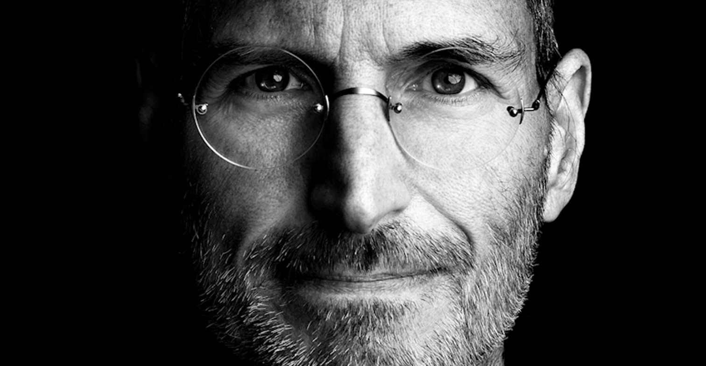

The man who created billion dollar Technologies ...

Steve Jobs - February 24, 1955 – October 5, 2011 .
Here's a time line of Steve Jobs :
1955 - Stephen Paul Jobs is born on Feb. 24.
1972Jobs enrolls at Reed College in Portland, Oregon, but drops out after a semester.
1974 - Jobs works for video game maker Atari and attends meetings of the Homebrew Computer Club with Steve Wozniak, a high school friend who was a few years older.
1975 - Jobs and Wozniak attend Homebrew Computer Club meetings.
1976 - Apple Computer is formed on April Fool's Day, shortly after Wozniak and Jobs create a new computer circuit board in a Silicon Valley garage. A third co-founder, Ron Wayne, leaves the company after less than two weeks. The Apple I computer goes on sale by the summer for $666.66.
1977 - Apple is incorporated by its founders and a group of venture capitalists. It unveils Apple II, the first personal computer to generate color graphics. Revenue reaches $1 million.
1978 - Jobs' daughter Lisa is born to girlfriend Chrisann Brennan.
1979 - Jobs visits Xerox Palo Alto Research Center, or PARC, and is inspired by a computer with a graphical user interface.
1945 - Discovers a way to grown wheat twice each season, doubling wheat yields
2009 - Jobs explains severe weight loss by saying he has a treatable hormone imbalance and that he will continue to run Apple. Days later he backtracks and announces he will be on medical leave. He returns to work in June. Later it is learned that he received a liver transplant.
1962 - Visits Delhi and brings his high-yielding strains of wheat to the Indian subcontinent in time to help mitigate mass starvation due to a rapidly expanding population
2010 - Apple sells 15 million of its newest gadget, the iPad, in nine months, giving rise to a new category of modern touch-screen tablet computers.
Jan 17 ,2011 In a memo to Apple employees, Jobs announces a second medical leave with no set duration. Cook again steps in to run day-to-day operations. Jobs retains CEO title and remains involved in major decisions.
Aug 24,2011 Apple announces that Jobs is resigning as CEO. Cook takes the CEO title, and Apple names Jobs chairman.
Oct 5 ,2011 Jobs dies at 56. Apple announces his death without giving a specific cause.
"Sometimes when you innovate, you make mistakes. It is best to admit them quickly, and get on with improving your other innovations"
If you have time, you should read more about this incredible human being on his Wikipedia entry.